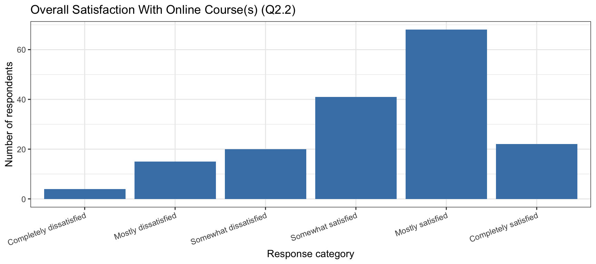
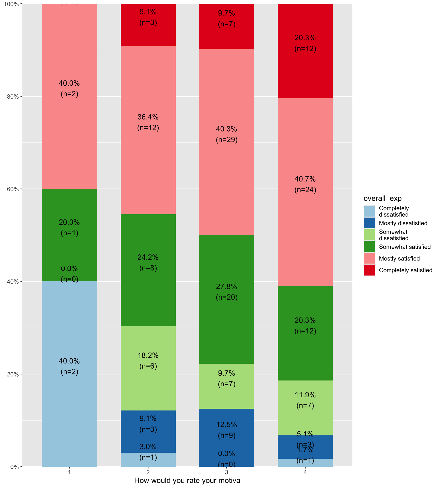
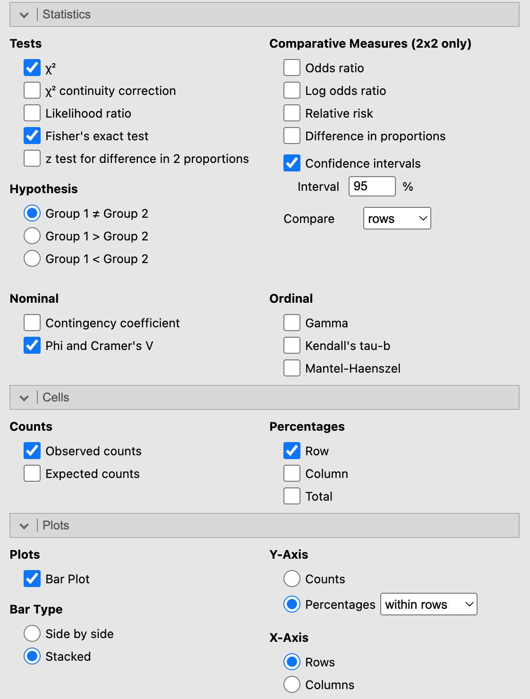
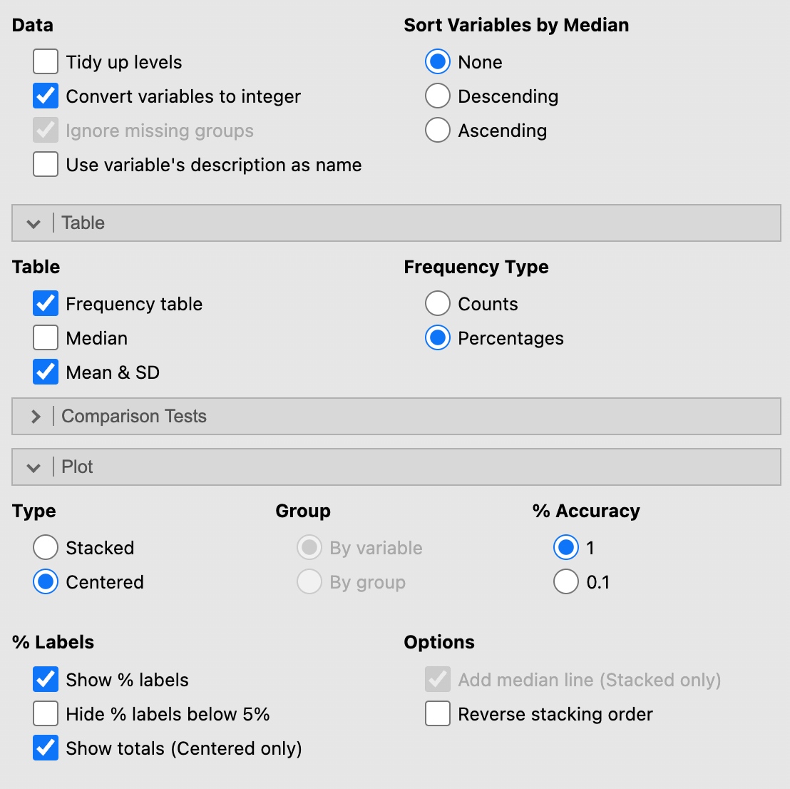
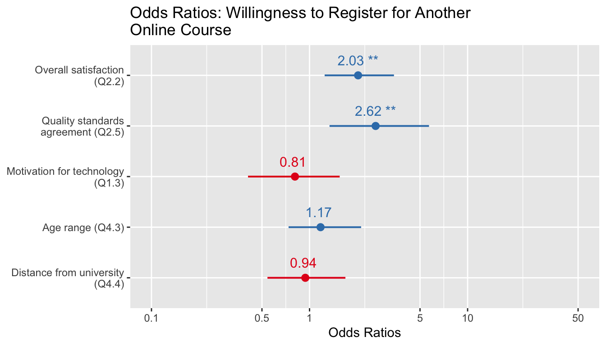
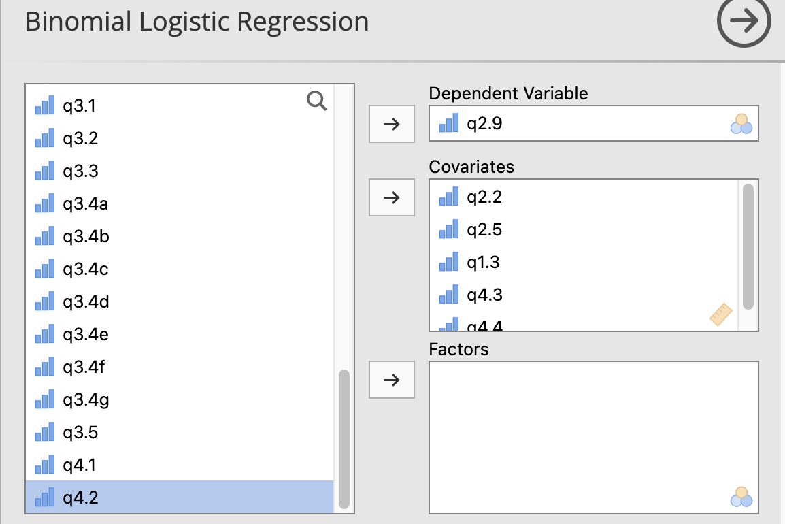

# Run this block ONCE to install all required packages.
# After installation you never need to run it again.
#install.packages(c("ggplot2", "likert", "scales", "sjPlot"))5 Statistical Analysis
This handout uses the 2001 Learning and Technology Survey for illustration. The survey collected information on students’ technology comfort, online learning experiences, and demographics.
Data source:
- Survey instrument: http://edmeasurement.net/5244/2001-survey.html
- SPSS data: https://raw.githubusercontent.com/Wenchao-Ma/Data/main/EDM2001/2001-data.sav
5.1 Research Questions
This handout addresses four research questions that progress from simple description to multivariate prediction:
| # | Research Question | Analysis Method |
|---|---|---|
| RQ1 | Overall, to what extent are students dissatisfied or satisfied with the online course(s) they have taken? | Frequency table + bar chart |
| RQ2 | Is motivation about using technology tools related to overall online learning experience? | Chi-square test + Cramer’s V |
| RQ3 | What does the distribution of technology comfort look like across the nine Q1.2 items? | Likert response profile |
| RQ4 | Which factors predict whether students would consider registering for another online course? | Binary logistic regression |
# Load packages at the start of every R session.
library(ggplot2) # creating plots
library(likert) # Likert response profile plots
library(scales) # formatting axis labels
library(haven)
library(sjPlot) # contingency tables and regression output5.2 Import the Data
read_sav() reads an SPSS data file — either from your computer or directly from a URL — into a data frame. Recall that a data frame is R’s version of a spreadsheet: rows are respondents, columns are variables.
# Read the SPSS file directly from the web into a data frame named df
df <- haven::read_sav(
"https://raw.githubusercontent.com/Wenchao-Ma/Data/main/EDM2001/2001-data.sav",user_na = FALSE,
)
# Check the dimensions: rows = respondents, columns = variables
dim(df)[1] 721 44# Preview the first six rows
head(df)# A tibble: 6 × 44
q1.1 q1.2a q1.2b q1.2c q1.2d q1.2e q1.2f q1.2g q1.2h q1.2i q1.3 q1.4 q1.5
<dbl> <dbl> <dbl> <dbl> <dbl> <dbl> <dbl> <dbl> <dbl> <dbl> <dbl> <dbl> <dbl>
1 1 4 4 4 4 4 3 2 4 2 2 1 4
2 2 4 4 4 4 4 4 4 4 4 3 1 3
3 2 4 4 4 4 4 4 4 3 3 4 1 3
4 2 4 4 4 4 4 4 3 4 3 2 1 2
5 2 4 4 4 4 4 4 3 3 2 2 1 2
6 1 4 4 4 4 4 4 3 3 3 3 1 3
# ℹ 31 more variables: q1.6 <dbl>, q2.1 <dbl>, q2.2 <dbl>, q2.3 <dbl>,
# q2.4 <dbl>, q2.5 <dbl>, q2.6a <dbl>, q2.6b <dbl>, q2.6c <dbl>, q2.6d <dbl>,
# q2.6e <dbl>, q2.6f <dbl>, q2.6g <dbl>, q2.7 <dbl>, q2.8 <dbl>, q2.9 <dbl>,
# q3.1 <dbl>, q3.2 <dbl>, q3.3 <dbl>, q3.4a <dbl>, q3.4b <dbl>, q3.4c <dbl>,
# q3.4d <dbl>, q3.4e <dbl>, q3.4f <dbl>, q3.4g <dbl>, q3.5 <dbl>, q4.1 <dbl>,
# q4.2 <dbl>, q4.3 <dbl>, q4.4 <dbl>5.3 RQ1: Overall Satisfaction With Online Course(s)
Question: Overall, to what extent are students dissatisfied or satisfied with the online course(s) they have taken? (Q2.2, six-point scale)
Q2.2 is a single categorical variable, so we describe its distribution with a frequency table (counts and percentages) and a bar chart.
# ------------------------------------------------------------------
# Q2.2: Overall, to what extent are you dissatisfied or satisfied
# with the online course(s) you have taken?
# 1 = Completely dissatisfied ... 6 = Completely satisfied
# ------------------------------------------------------------------
df$overall_exp_num <- df$q2.2
df$overall_exp <- factor(
df$q2.2,
levels = 1:6,
labels = c(
"Completely dissatisfied",
"Mostly dissatisfied",
"Somewhat dissatisfied",
"Somewhat satisfied",
"Mostly satisfied",
"Completely satisfied"
),
ordered = TRUE # ordered = TRUE tells R this is an ordinal scale
)5.3.1 Frequency Table
table() counts how many respondents chose each category. prop.table() converts those counts into proportions, which we multiply by 100 to get percentages.
rq1_counts <- table(df$overall_exp) # raw counts
rq1_props <- prop.table(rq1_counts) # proportions (each / total)
# Combine into a readable data frame
data.frame(
response = names(rq1_counts),
count = as.integer(rq1_counts),
proportion = round(as.numeric(rq1_props), 3),
percent = round(100 * as.numeric(rq1_props), 1)
) response count proportion percent
1 Completely dissatisfied 4 0.024 2.4
2 Mostly dissatisfied 15 0.088 8.8
3 Somewhat dissatisfied 20 0.118 11.8
4 Somewhat satisfied 41 0.241 24.1
5 Mostly satisfied 68 0.400 40.0
6 Completely satisfied 22 0.129 12.95.3.2 Collapsed Summary
To simplify reporting we combine the three satisfied categories and the three dissatisfied categories into two groups.
# Proportion who chose "Somewhat satisfied" or higher (codes 4, 5, 6)
prop_satisfied <- mean(df$overall_exp_num >= 4,na.rm = TRUE)
# Proportion who chose "Somewhat dissatisfied" or lower (codes 1, 2, 3)
prop_dissatisfied <- mean(df$overall_exp_num <= 3,na.rm = TRUE)
data.frame(
group = c("Somewhat or more satisfied", "Somewhat or more dissatisfied"),
proportion = round(c(prop_satisfied, prop_dissatisfied), 3)
) group proportion
1 Somewhat or more satisfied 0.771
2 Somewhat or more dissatisfied 0.2295.3.3 Bar Chart
ggplot2 builds plots layer by layer. aes() maps variables to visual properties (x axis, y axis). geom_col() draws bars. labs() sets titles and axis labels.
# Convert the frequency table to a data frame for ggplot
rq1_plot_df <- as.data.frame(rq1_counts)
names(rq1_plot_df) <- c("overall_exp", "count")
ggplot(rq1_plot_df, aes(x = overall_exp, y = count)) +
geom_col(fill = "steelblue") +
labs(
title = "Overall Satisfaction With Online Course(s) (Q2.2)",
x = "Response category",
y = "Number of respondents"
) +
theme_bw() +
# Rotate x-axis labels so they don't overlap
theme(axis.text.x = element_text(angle = 20, hjust = 1))
Reporting template (RQ1):
Among respondents with non-missing ratings on overall online-course experience (\(N = 170\)), the majority reported positive experiences: 24.1% somewhat satisfied, 40.0% mostly satisfied, and 12.9% completely satisfied (77.1% combined). A smaller proportion reported dissatisfaction: 11.8% somewhat dissatisfied, 8.8% mostly dissatisfied, and 2.4% completely dissatisfied (22.9% combined; see Figure X).
Check the total number of respondents in 5.5.2? Is it the same as the number of responses in the sample? If not, why might that be?
In Jamovi, Analyses -> Exploration -> Descriptives -> select Q2.2 -> check “Frequency tables” and “Bar plot”
5.4 RQ2: Motivation and Overall Online Learning Experience
RQ2: Is motivation about using technology tools (Q1.3) associated with overall online learning experience (Q2.2)?
Both variables are categorical, so we use a chi-square test of independence to test whether the two variables are related, and Cramer’s V to quantify the strength of that association.
The chi-square test checks whether the distribution of satisfaction ratings looks the same across all motivation groups. A significant result (\(p < .05\)) means the groups differ more than we would expect by chance. A non-significant result means any observed differences are within the range of random variation.
5.4.1 Cross-Tabulation and Chi-Square Test
sjPlot::tab_xtab() produces a contingency table, chi-square test, and Cramer’s V in one step. show.row.prc = TRUE displays row percentages, making it easier to compare distributions across motivation groups.
sjPlot::tab_xtab(
var.row = df$q1.3,
var.col = df$overall_exp,
show.row.prc = TRUE
)| How would you rate your motiva |
overall_exp | Total | |||||
|---|---|---|---|---|---|---|---|
| Completely dissatisfied |
Mostly dissatisfied | Somewhat dissatisfied |
Somewhat satisfied | Mostly satisfied | Completely satisfied | ||
| 1 | 2 40 % |
0 0 % |
0 0 % |
1 20 % |
2 40 % |
0 0 % |
5 100 % |
| 2 | 1 3 % |
3 9.1 % |
6 18.2 % |
8 24.2 % |
12 36.4 % |
3 9.1 % |
33 100 % |
| 3 | 0 0 % |
9 12.5 % |
7 9.7 % |
20 27.8 % |
29 40.3 % |
7 9.7 % |
72 100 % |
| 4 | 1 1.7 % |
3 5.1 % |
7 11.9 % |
12 20.3 % |
24 40.7 % |
12 20.3 % |
59 100 % |
| Total | 4 2.4 % |
15 8.9 % |
20 11.8 % |
41 24.3 % |
67 39.6 % |
22 13 % |
169 100 % |
| χ2=41.213 · df=15 · Cramer's V=0.285 · Fisher's p=0.132 | |||||||
5.4.2 Interpreting Cramer’s V
Cramer’s V measures the strength of association between two categorical variables, independent of sample size. Use the thresholds below to interpret the magnitude. Degrees of freedom (df) here = \(\min(r - 1,\, c - 1)\), where \(r\) = number of rows and \(c\) = number of columns.
| df | Small | Medium | Large |
|---|---|---|---|
| 1 | 0.10 | 0.30 | 0.50 |
| 2 | 0.07 | 0.21 | 0.35 |
| 3 | 0.06 | 0.17 | 0.29 |
| 4 | 0.05 | 0.15 | 0.25 |
| 5 | 0.04 | 0.13 | 0.22 |
How would you interpret a non-significant chi-square result paired with a medium Cramer’s V? What might that combination tell you about sample size?
5.4.3 Stacked Bar Chart
A stacked bar chart shows the full distribution of satisfaction levels within each motivation group side by side, making it easy to compare groups visually.
sjPlot::plot_xtab(
df$q1.3,
df$overall_exp,
margin = "row", # compute percentages within each row (motivation group)
bar.pos = "stack", # stack bar segments
coord.flip = F # flip so motivation groups appear on the y axis
)
Each column is a motivation group. The segments within each bar show what percentage of that group chose each satisfaction level. If the segment pattern looks similar across all rows, the two variables are not strongly related.
In Jamovi, Analyses -> Frequencies -> Contigencies Tables -> Independent Samples -> select variables to rows and columns
Under Statistics, check “Chi-square test”, “Fisher’s exact test” and “Phi and Cramer’s V”.
Under Cells, check “Row percentages”. Under Plots, check “Stacked bar plot”.

A chi-square test of independence examined whether motivation about using technology (Q1.3) was associated with overall online learning experience (Q2.2), using \(N = 169\) respondents with complete data on both variables. The test was not significant, \(\chi^2(15) = 41.21\), \(p =0.147\), Cramer’s \(V = .285\). This suggests that motivation and overall experience are not significantly related in this sample, although the medium effect size (Cramer’s \(V = .285\)) indicates a moderate association that may warrant further investigation with a larger sample.
5.5 RQ3: Likert Item Analysis — Technology Comfort
RQ3: What does the distribution of comfort levels look like across the nine technology tasks in Q1.2?
We use the likert package to compute and visualize the full response profile or the percentage of respondents in each response category — for all nine items at once.
Item mean collapses the full distribution into one number. Two items can have identical means but very different profiles — for example, one item might be uniformly “somewhat comfortable” while another is split between “mostly uncomfortable” and “mostly comfortable.” The Likert plot reveals the full picture.
5.5.1 Select and Label the Items
# Select the nine Q1.2 sub-items (columns q1.2a through q1.2i)
# paste0() creates the column names: "q1.2a", "q1.2b", ..., "q1.2i"
likert_items <- df[, paste0("q1.2", letters[1:9])]
# Assign descriptive column names (these appear on the plot)
names(likert_items) <- c(
"Using email",
"Typing / keyboarding",
"Accessing the Web",
"Sending documents electronically",
"Receiving documents electronically",
"Downloading documents",
"Downloading multimedia materials",
"Listening to audio on the computer",
"Viewing video on the computer"
)
head(likert_items)# A tibble: 6 × 9
`Using email` `Typing / keyboarding` `Accessing the Web`
<dbl> <dbl> <dbl>
1 4 4 4
2 4 4 4
3 4 4 4
4 4 4 4
5 4 4 4
6 4 4 4
# ℹ 6 more variables: `Sending documents electronically` <dbl>,
# `Receiving documents electronically` <dbl>, `Downloading documents` <dbl>,
# `Downloading multimedia materials` <dbl>,
# `Listening to audio on the computer` <dbl>,
# `Viewing video on the computer` <dbl>5.5.2 Item-Level Descriptives (Mean and SD)
sapply() applies the same function to every column of a data frame and returns a vector (or matrix) of results. na.rm = TRUE tells the function to ignore missing values.
data.frame(
item = names(likert_items),
valid_n = sapply(likert_items, function(x) sum(!is.na(x))),
mean = round(sapply(likert_items, mean, na.rm = TRUE), 2),
sd = round(sapply(likert_items, sd, na.rm = TRUE), 2)
) item valid_n
Using email Using email 706
Typing / keyboarding Typing / keyboarding 706
Accessing the Web Accessing the Web 702
Sending documents electronically Sending documents electronically 702
Receiving documents electronically Receiving documents electronically 703
Downloading documents Downloading documents 704
Downloading multimedia materials Downloading multimedia materials 683
Listening to audio on the computer Listening to audio on the computer 672
Viewing video on the computer Viewing video on the computer 656
mean sd
Using email 3.81 0.68
Typing / keyboarding 3.75 0.73
Accessing the Web 3.77 0.70
Sending documents electronically 3.41 0.91
Receiving documents electronically 3.48 0.86
Downloading documents 3.30 0.93
Downloading multimedia materials 2.83 0.99
Listening to audio on the computer 3.13 0.98
Viewing video on the computer 2.93 0.995.5.3 Convert to Labeled Factors and Fit the Likert Object
The likert() function requires ordered factors with text labels. lapply() applies the conversion to every column.
# Define the four response labels in ascending order
likert_labels_4 <- c(
"Mostly uncomfortable",
"Somewhat uncomfortable",
"Somewhat comfortable",
"Mostly comfortable"
)
# Convert every column to an ordered factor with these labels
likert_items_factor <- as.data.frame(lapply(
likert_items,
function(x) factor(x, levels = 1:4, labels = likert_labels_4, ordered = TRUE)
))
# Fit the likrt object -- computes the percentage in each category per item
likert_fit <- likert::likert(likert_items_factor)
# Print the percentage table
likert_fit$results Item Mostly uncomfortable
1 Using.email 5.099150
2 Typing...keyboarding 5.524079
3 Accessing.the.Web 4.985755
4 Sending.documents.electronically 7.122507
5 Receiving.documents.electronically 6.258890
6 Downloading.documents 7.244318
7 Downloading.multimedia.materials 11.713031
8 Listening.to.audio.on.the.computer 8.482143
9 Viewing.video.on.the.computer 10.518293
Somewhat uncomfortable Somewhat comfortable Mostly comfortable
1 0.4249292 2.691218 91.78470
2 0.8498584 6.515581 87.11048
3 0.5698006 6.410256 88.03419
4 7.9772080 21.509972 63.39031
5 5.5476529 22.190612 66.00284
6 10.6534091 27.130682 54.97159
7 23.2796486 35.139092 29.86823
8 16.2202381 28.720238 46.57738
9 20.7317073 33.689024 35.060985.5.4 Response Profile Plot
plot(likert_fit,type = "bar")
How to read this plot: Each row is one survey item. The colored bar segments show the percentage of respondents choosing each comfort level. Items with a large “Mostly comfortable” segment (dark teal, far right) are tasks respondents feel confident about. Items with large segments on the left (uncomfortable) are where students may need more support or training.
In Jamovi, Install vijPlots module
vijPlots -> Likert Plots -> select the nine Q1.2 sub-items (q1.2a through q1.2i) as “Items”
Select the following options to create table and plot

Reporting template (RQ3):
Descriptive analyses of the nine technology-comfort items (Q1.2) showed that mean ratings ranged from \(M = 2.83\) (\(SD = 0.99\)) for Downloading multimedia materials to \(M = 3.81\) (\(SD = 0.68\)) for Using email (see Table X). The Likert response profiles (Figure X) indicated that Using email had the highest concentration of “Mostly comfortable” responses (91.8%), whereas Downloading multimedia materials had the largest proportion of uncomfortable responses (35.0% combined across the two uncomfortable categories). These results suggest that students are generally comfortable with basic internet tasks (email, web access, keyboarding) but may need additional support with multimedia-related tasks such as downloading multimedia materials, viewing video, and listening to audio.
5.6 RQ4: Logistic Regression — Predicting Willingness to Register Again
RQ4: Which factors predict whether a respondent would consider registering for another online course if the topic was of interest?
Outcome variable (Q2.9): Would you consider registering for another online course? (1 = Yes, 0 = No)
Predictor variables:
| Variable | Survey Question | Scale |
|---|---|---|
| Q2.2 | Overall satisfaction with online course(s) taken | 1 (completely dissatisfied) – 6 (completely satisfied) |
| Q2.5 | Agreement that online courses meet the same quality standards as classroom courses | 1 (disagree) – 4 (agree) |
| Q1.3 | Motivation to learn more about using technology tools | 1 (poor) – 4 (excellent) |
| Q4.3 | Age range | 1 (youngest) – 5 (oldest) |
| Q4.4 | Distance from place of residence to the University | 1 (closest) – 5 (farthest) |
Why logistic regression? The outcome variable is binary (Yes / No). Ordinary linear regression is not appropriate for binary outcomes because it can predict values outside the 0–1 range. Logistic regression models the log-odds of the outcome and always produces predicted probabilities between 0 and 1.
What is an odds ratio (OR)? The OR tells you how the odds of “Yes” change for each one-unit increase in a predictor:
- OR > 1: higher predictor values → higher odds of “Yes”
- OR < 1: higher predictor values → lower odds of “Yes”
- OR = 1: predictor has no effect on the odds
- OR = 2: each one-unit increase doubles the odds of “Yes”
5.6.1 Fit the Logistic Regression Model
glm() fits a Generalized Linear Model. Setting family = binomial(link = "logit") specifies logistic regression. The formula register ~ ... reads: “predict register from the listed predictors.”
logit_model <- glm(
q2.9 ~ q2.2 + q2.5 + q1.3 + q4.3 + q4.4,
data = df,
family = binomial(link = "logit")
)
# The summary shows log-odds coefficients (not yet odds ratios)
summary(logit_model)
Call:
glm(formula = q2.9 ~ q2.2 + q2.5 + q1.3 + q4.3 + q4.4, family = binomial(link = "logit"),
data = df)
Coefficients:
Estimate Std. Error z value Pr(>|z|)
(Intercept) -2.20290 1.33894 -1.645 0.09992 .
q2.2 0.70736 0.25506 2.773 0.00555 **
q2.5 0.96252 0.36510 2.636 0.00838 **
q1.3 -0.21245 0.33728 -0.630 0.52876
q4.3 0.16053 0.26103 0.615 0.53856
q4.4 -0.06161 0.28501 -0.216 0.82886
---
Signif. codes: 0 '***' 0.001 '**' 0.01 '*' 0.05 '.' 0.1 ' ' 1
(Dispersion parameter for binomial family taken to be 1)
Null deviance: 124.402 on 159 degrees of freedom
Residual deviance: 90.087 on 154 degrees of freedom
(561 observations deleted due to missingness)
AIC: 102.09
Number of Fisher Scoring iterations: 65.6.2 Model Summary Table (Odds Ratios)
sjPlot::tab_model() exponentiates the log-odds coefficients to give odds ratios and displays them with 95% confidence intervals and p-values — all in one formatted table.
sjPlot::tab_model(
logit_model,
pred.labels = c(
"Intercept",
"Overall satisfaction (Q2.2)",
"Quality standards agreement (Q2.5)",
"Motivation for technology (Q1.3)",
"Age range (Q4.3)",
"Distance from university (Q4.4)"
),
dv.labels = "Register for another online course (1 = Yes)",
digits = 3
)| Register for another online course (1 = Yes) | |||
| Predictors | Odds Ratios | CI | p |
| Intercept | 0.110 | 0.007 – 1.433 | 0.100 |
| Overall satisfaction (Q2.2) | 2.029 | 1.246 – 3.421 | 0.006 |
| Quality standards agreement (Q2.5) | 2.618 | 1.338 – 5.700 | 0.008 |
| Motivation for technology (Q1.3) | 0.809 | 0.408 – 1.552 | 0.529 |
| Age range (Q4.3) | 1.174 | 0.737 – 2.120 | 0.539 |
| Distance from university (Q4.4) | 0.940 | 0.542 – 1.687 | 0.829 |
| Observations | 160 | ||
| R2 Tjur | 0.231 | ||
5.6.3 Odds Ratio Plot
A forest plot displays each odds ratio as a dot with a horizontal line for its 95% confidence interval. If the line does not cross the vertical reference line at OR = 1, the predictor is statistically significant at \(\alpha = .05\).
sjPlot::plot_model(
logit_model,
type = "est",
axis.labels = c(
"Distance from university (Q4.4)",
"Age range (Q4.3)",
"Motivation for technology (Q1.3)",
"Quality standards agreement (Q2.5)",
"Overall satisfaction (Q2.2)"
),
title = "Odds Ratios: Willingness to Register for Another Online Course",
show.values = TRUE,
value.offset = 0.3
)
In Jamovi, Analyses -> Regression -> Logistic Regression
Select the following options to create table and plot


How to read this plot:
- Each dot is the estimated odds ratio for that predictor.
- The horizontal line through the dot is the 95% confidence interval.
- The vertical dashed line marks OR = 1 (no effect).
- If the entire CI is to the right of 1, the predictor significantly increases the odds of “Yes.”
- If the entire CI is to the left of 1, the predictor significantly decreases the odds.
- If the CI crosses 1, the predictor is not statistically significant at \(\alpha = .05\).
Reporting template (RQ4):
A binary logistic regression was conducted to identify predictors of willingness to register for another online course (\(N = 160\)). Two predictors were statistically significant. Overall satisfaction with online coursework was a significant positive predictor (OR = 2.03, 95% CI [1.25, 3.42], \(p = .006\)), indicating that each one-unit increase in satisfaction was associated with approximately twice the odds of willingness to register again. Agreement that online courses meet the same quality standards as classroom courses was also a significant positive predictor (OR = 2.62, 95% CI [1.34, 5.70], \(p = .008\)). Motivation for technology use (OR = 0.81, 95% CI [0.41, 1.55], \(p = .529\)), age range (OR = 1.17, 95% CI [0.74, 2.12], \(p = .539\)), and distance from the university (OR = 0.94, 95% CI [0.54, 1.69], \(p = .829\)) were not statistically significant predictors.
5.7 Summary: What to Report
| RQ | Method | Key statistics to report |
|---|---|---|
| RQ1 | Frequency table + bar chart | N, % per category, combined satisfied/dissatisfied % |
| RQ2 | Chi-square + Cramer’s V | \(\chi^2\), df, p, Cramer’s V, effect size interpretation |
| RQ3 | Likert response profile | Mean and SD per item; % in each response category |
| RQ4 | Binary logistic regression | OR with 95% CI and p per predictor |
5.8 Exercise
Using the same data, answer the following research questions:
- Describe where the primary computer is located for the participants in the sample (Q1.1)?
- What’s the relationship between whether they will recommend online courses to others (Q2.9) and their overall satisfaction with online courses (Q2.2)? Create a contingency table, chi-square test, and Cramer’s V to answer this question. Then write a brief report summarizing the results.